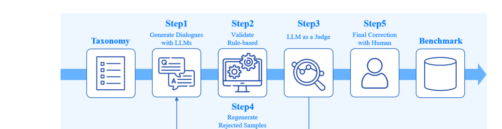

Recent Research · Project Page
A capability-based benchmark for diagnosing Korean multi-turn dialogue failures

| Benchmark | # Dialogues | # Turns | # Tasks |
|---|---|---|---|
| MT-Bench-101 | 1,388 | 4,208 | 13 |
| MT-Bench++ | 80 | 640 | 8 |
| MT-Eval | 168 | 1,170 | 4 |
| MultiChallenge | 273 | 1,108 | 4 |
| StructFlowBench | 155 | 643 | 6 |
| MMMT-IF | 71 | 990 | 6 |
| TOD-ProcBench | 1,004 | 6,953 | 3 |
| KoChatBench (ours) | 600 | 2,518 | 12 |
Each of the 12 tasks has its own English-language rubric with four scoring bands (1–10 scale) — the judge sees only the rubric for the task being tested, and scores the final assistant turn against it.
| Capability | Task | What it tests |
|---|---|---|
| C1 · Context & Reference Management | C1-01 | Explicit Information Recall |
| C1-02 | Distributed Information Integration | |
| C1-03 | Referential & Ellipsis Resolution | |
| C1-04 | State Change Tracking | |
| C2 · Instruction Constraint Maintenance | C2-01 | Single Instruction Maintenance |
| C2-02 | Accumulated Constraints | |
| C2-03 | Conflict Resolution | |
| C3 · Revision & Recovery | C3-01 | Iterative Revision & Preservation |
| C3-02 | Self-Correction | |
| C4 · Dialogue Recovery & Robustness | C4-01 | Error Propagation Blocking |
| C4-02 | Ambiguity Resolution | |
| C4-03 | Topic Interruption Recovery |
Worked example — C1-03 · Referential & Ellipsis Resolution
| Score | Criterion |
|---|---|
| 1–3 | Resolves the reference to the wrong entity, or cannot answer. |
| 4–6 | Resolves some references but misses or confuses key links. |
| 7–9 | Mostly correct, with minor ambiguity or extra text. |
| 10 | Resolves the reference exactly and answers the current request. |
The session opens with a user listing three items by name (가방/bag, 코트/coat, 운동화/sneakers, each with a price), then a fourth, unrelated item (지갑/wallet) enters the conversation. Every question after that points at an item only through a chain of position and discourse references — never the item's name — so the assistant has to keep resolving each new pronoun against what it just said, not against the original list:
어제 백화점에서 가방, 코트, 운동화를 차례로 봤어. 가방은 18만 원, 코트는 24만 원, 운동화는 13만 원이었어. 셋 다 마음에 들긴 했어.
세 가지를 차례로 보셨군요. 가격대가 조금씩 다르니 어디에 더 끌리는지부터 정하면 고르기 쉬워질 거예요.
점심 먹고 지갑도 봤는데 그건 30만 원이라 바로 포기했어. 방금 본 지갑 말고, 아까 백화점에서 차례로 본 것 중 두 번째로 말한 거, 그거 가격이 얼마였는지 다시 알려줘.
방금 말한 그것 바로 앞에 봤던 게 사실 제일 끌려. 그건 얼마였는지 짚어줘.
"그것 바로 앞에" ("the one right before that") only resolves correctly if the model still has the
previous answer's referent (코트/coat) live in working memory — not the original user list. It
does, across all three consecutive indirect references in this session, and the LLM-as-a-judge
scores each one 10/10 against the golden answer above. (Run: v2_pilot2, target
google/gemma-4-31b-it, judge gpt-5.4-mini.)
Six commercial LLMs were evaluated with session-level minimum scoring (0–100) — a single bad turn drags down the whole session, which is deliberate: it surfaces stability failures that a mean-only score would hide.
| Model | Overall |
|---|---|
| Gemma-4 31B-it | 91.0 |
| Mistral Medium 3.5 | 89.1 |
| GPT-OSS 120B | 88.2 |
| Nemotron Nano | 83.5 |
| GPT-OSS 20B | 83.3 |
| Nemotron Super | 71.6 |
Ongoing work: the KoChatBench evaluation suite is under active development in a private repository — the v2 pilot (117 samples across 12 tasks) is currently benchmarking Gemma-4-31B-IT, GPT-OSS-120B, and GPT-OSS-20B, extending the capability-level analysis introduced in the paper.